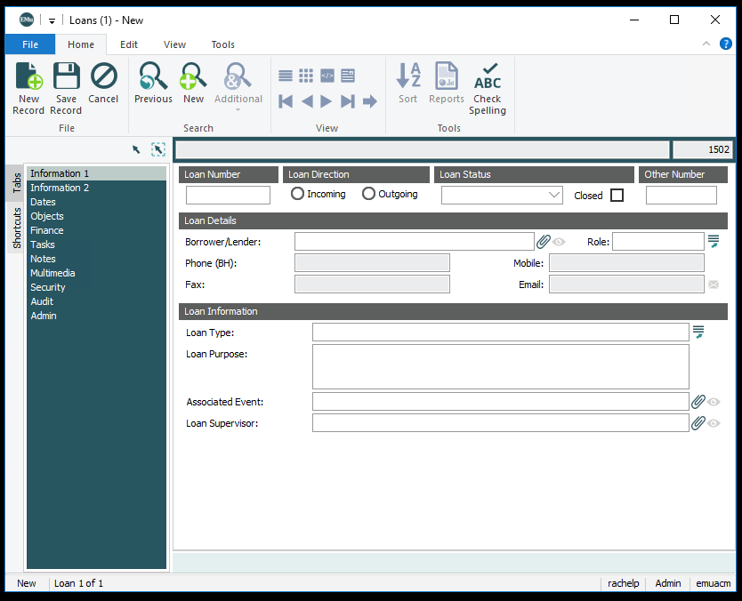
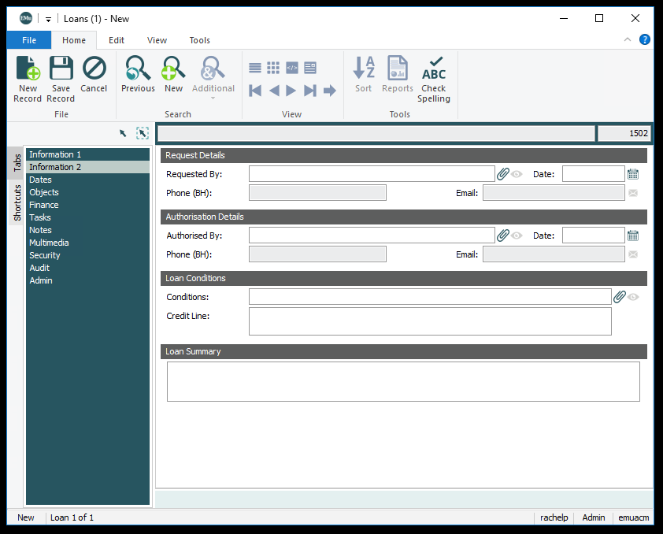
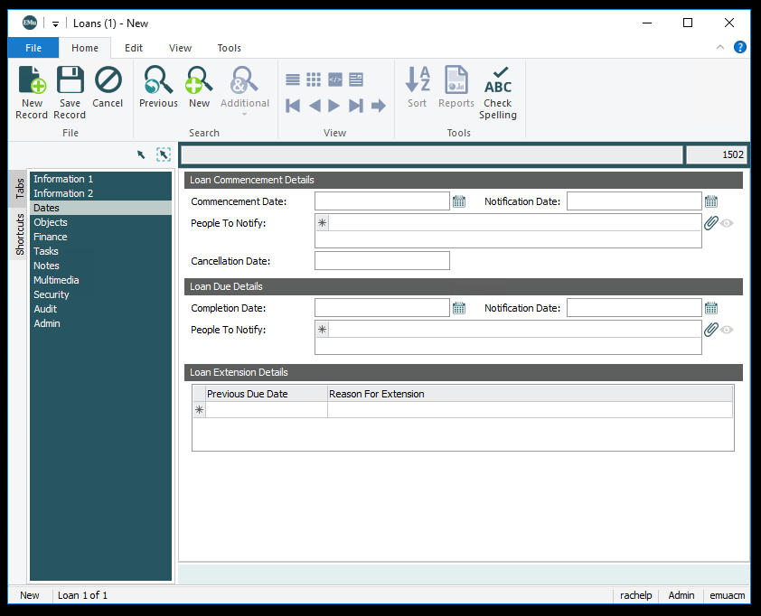

Loans
Information 1
Loan Number
Internally assigned number or code to identify the loan. Loans numbers follow the following format
L [year of loan] . [order of the loan, assign next available number]
Example: L2020.142
Loan Direction
Indicates whether the loan is incoming or outgoing.
- Incoming
- Outgoing
Loan Status
The current status of the loan. This will be updated multiple times throughout the loan process. From Pending Approval-->Closed/Returned to lender/
- Approved/At Venue- Used once the loan arrives at the borrowing institution.Used only for Outgoing loans.
- Approved/On-site- Used once the loan arrives at the borrowing institution. Used only for Incoming Loans.
- Approved/Upcoming- Used before the loan has left the lending institution.Used for both incoming and outgoing loans.
- Closed/Accessioned- Used for Incoming for Possible Acquisition that have been accessioned into the permanent collection.
- Closed/Canceled- Used for Canceled Loans.
- Closed/Declined- Used for Declined Loans.
- Closed/Returned to ACMAA- Used for Outgoing Loans.
- Closed/Returned to lender- Used for Incoming Loans.
- Partially Active- Used when parts of the loan stay after the rest are returned. Typically used for Long-term Loans.
- Pending approval- Used for works waiting for approval
Closed
Check this box once a loan status changes to Closed
Other Number
NOT USED.Could be used for lender numbers.
Borrower/Lender
The person, institution or company that is borrowing or lending the collection item. Links to Links to Parties Module.
Role
The role of the role, institution or company that is borrowing or lending the collection item. All parties will have a role of lender or borrower.
Loan Type
Type of loan.
- Exhibition Loan- Used for a loan for an exhibition.
- Extended Loan*- No longer used. Was used for extensions of
- Incoming Loan to Permanent Collection- Used for a loan for the permanent collection.
- Other: See Loan Purpose
- Possible Acquisition- Used for a loan that we may acquire.
- Storage Loan*- No longer used. Was used for things temporarily stored at the museum.
- Temporary Deposit*- No longer used. Was used for things temporarily stored at the museum.
Loan Purpose
Notes field to give further description of the purpose that the collection item is being borrowed/lent.
Associated Event
An exhibition in which items on loan are involved. Links to Events Module.
Loan Supervisor
The registrar responsible for supervising the loan. Links to Parties Module.
Information 2
Requested By
The curator who requested the loan. Links to Parties Module.
Date
The date on which the loan was requested.
Authorized By
The person who authorised the loan. Links to Parties Module.
Date
The date on which the loan was authorised.
Conditions
NOT USED. Links to Rights Module.
Credit Line
Used for credit line of loan. Does not link to Accession Lots Module or Catalogue Module.
Loan Summary
Description of contents of loan.
Dates
Commencement Date
Start date of loan. Also known as opening date of first venue.
Completion Date
End date of loan. Also known as closing date of last venue.
Loan Extension Details
If a loan is extended, end date and reason are added to the table.
Conservation
All conservation records attached to the loan. Links to Conservation Module.
Objects
Displays catalogue records attached to lot. Notes can be used for partially active or accepted loans. Links to Catalogue Module.
Multimedia
As we continue to update EMu, we are adding more important documents for easy access. Loans should have images of the following:
- Signed loan agreement
- Packaged shows should have a checklist with works and credit lines if available.
Tabs not currently used:
- Finance
- Tasks
- Notes
- Movements